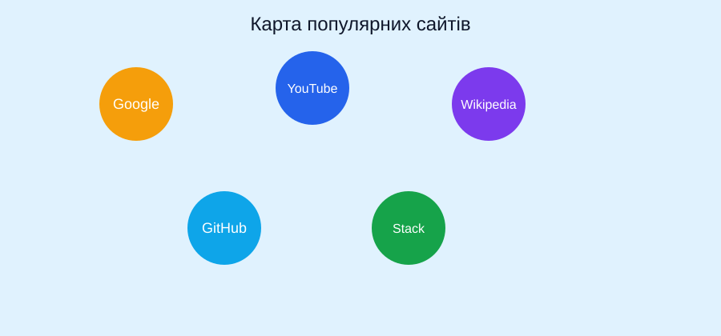

Натисніть на одну з позначок на карті, щоб перейти на відповідний популярний сайт.

Кола на зображенні - активні області карти (image map), що реалізовані через тег map/area.
Повернутися на головну (завдання 1-2)
Повернутися до завдання 3